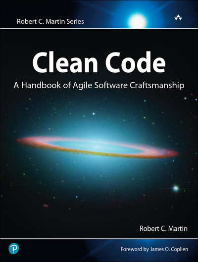
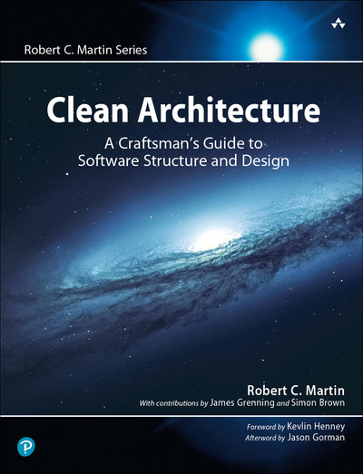

graph LR CFO((CFO)) COO((COO)) CTO((CTO)) Employee[Employee<br/>+ calculatePay<br/>+ reportHours<br/>+ save] CFO -.-> Employee COO -.-> Employee CTO -.-> Employee
1 CM2 - Clean Code & Architecture
2 Clean Code

2.1 Clean code - coding practices
- ratio reading/writing code > 10
- Boy Scout Rule 1
- KISS
- DRY: Don’t Repeat Yourself
- follow standard conventions
La suite du cours présente les points clés et les moins controversés du Clean Code et Clean Architecture. Prendre du recul sur chaque “règle” : elles dépendent du contexte. Musique: le triton
2.2 Clean code - Meaningful names
- Choose descriptive and unambiguous names.
- Make meaningful distinction.
- Use pronounceable names.
- Use searchable names.
- Replace magic numbers with named constants.
- Avoid encodings. Don’t append prefixes or type information.
// Poor naming
int d; // days
List<int[]> list1 = new ArrayList<>();
// Clean naming
int daysSinceCreation;
List<Cell> gameBoard = new ArrayList<>();Utiliser les mots utilisés par le business. Attention ! Certains noms peuvent être ambigus. Ex: scenario
2.3 Clean code - Functions
- Functions Should Be Small and Do One Thing
- Stepdown rule: read like a top-down narrative
// Violates single responsibility
public void processUserData(User user) {
// validate user
if (user.getName() == null || user.getEmail() == null) {
throw new IllegalArgumentException("Invalid user");
}
// save to database
database.save(user);
// send email
emailService.sendWelcomeEmail(user.getEmail());
}
// Clean approach - separate concerns
public void processUserData(User user) {
validateUser(user);
saveUser(user);
sendWelcomeEmail(user);
}
private void validateUser(User user) {
if (user.getName() == null || user.getEmail() == null) {
throw new IllegalArgumentException("Invalid user");
}
}We want every function to be followed by those at the next level of abstraction so that we can read the program, descending one level of abstraction at a time as we read down the list of functions.
2.4 Clean code - avoid comments
// Poor - comment explains unclear code
// Check to see if employee is eligible for full benefits
if ((employee.flags & HOURLY_FLAG) && (employee.age > 65))
// Clean - code explains itself
if (employee.isEligibleForFullBenefits())“The proper use of comments is to compensate for our failure to express ourself in code” Lorsque le code change, les commentaires sont souvent oubliés et finissent par être hors sujet ou au mauvais endroit.
“Truth can only be found in one place: the code.”
2.5 Clean code - good comments
- informative comments
// format matched kk:mm:ss EEE, MMM dd, yyyy
Pattern timeMatcher = Pattern.compile(
"\\d*:\\d*:\\d* \\w*, \\w* \\d*, \\d*");- explanation of intent
public void testConcurrentAddWidgets() throws Exception {
// ...
// This is our best attempt to get a race condition
// by creating large number of threads.
for (int i = 0; i < 25000; i++) {
// ...
thread.start();
}
}- warning
public static SimpleDateFormat makeStandardHttpDateFormat() {
// SimpleDateFormat is not thread safe, so we need to create each instance independently.
SimpleDateFormat df = new SimpleDateFormat("EEE, dd MMM yyyy HH:mm:ss z");
df.setTimeZone(TimeZone.getTimeZone("GMT"));
return df;
}- TODO comments
- public API: Javadoc
2.6 Clean code - TDD
- You may not write production code until you have written a failing unit test.
- You may not write more of a unit test than is sufficient to fail, and not compiling is failing.
- You may not write more production code than is sufficient to pass the currently failing test.
2.7 Clean code - Clean tests
FIRST
- Fast
- Independent
- Repeatable
- Self-Validating
- Timely
“What makes a clean test? Three things. Readability, readability, and readability”. Self-validating: tests should have a boolean output. Pass or Fail, no log file or text comparison.
Timely: 1st rule of TDD
3 Clean Architecture

3.1 Introduction
- Definition
- software architecture = high-level decisions and structure
- software design = lower level
- R.C. Martin claims it’s the same
- Goal: minimize human resources required to build and maintain the required system
Building a home: outward appearance but also where sockets are placed. “So it is with software design. The low-level details and the high-level structure are all part of the same whole.”
3.2 Clean architecture - SOLID
- SRP: Single Responsibility principle
- OCP: Open-Closed principle
- LSP: Liskov Substitution principle
- ISP: Interface segregation principle
- DIP: Dependency Inversion principle
4 SOLID - Single Responsibility Principle
- A module should be responsible to one, and only one, actor.
- module = function, source file, class, component, micro-service
Principe fractal: il s’applique des plus petites unités jusqu’à un système complet.
4.1 SOLID - SRP Example
classDiagram
class EmployeeFacade {
+calculatePay()
+reportHours()
+save()
}
class PayCalculator {
+calculatePay()
}
class HourReporter {
+reportHours()
}
class EmployeeSaver {
+saveEmployee()
}
class EmployeeData {
}
EmployeeFacade --> PayCalculator
EmployeeFacade --> HourReporter
EmployeeFacade --> EmployeeSaver
HourReporter --> EmployeeData
PayCalculator --> EmployeeData
EmployeeSaver --> EmployeeData
5 SOLID - Open/Closed principle
- 1988 Object Oriented Software Construction - Bertrand Meyer
- A software artifact should be open for extension but closed for modification.
Pour ajouter une fonctionnalité, on devrait pouvoir simplement ajouter du nouveau code, sans modifier l’ancien.
5.1 SOLID - OCP example 1 Violation
Violation of OCP: cannot extend, requires modification
class FinancialReportGenerator {
public String generateReport(FinancialStatement statement, String format) {
if (format.equals("HTML")) {
return "<html><h1>Financial Report</h1>" +
"<p>Profit: $" + statement.getProfit() + "</p></html>";
} else if (format.equals("PDF")) {
return "PDF_HEADER\nFinancial Report\n" +
"Profit: $" + statement.getProfit() + "\nPDF_FOOTER";
}
// Adding Excel requires modifying this method!
throw new IllegalArgumentException("Unsupported format");
}
}Pour ajouter un rapport Excel, il faut modifier la classe. L’exemple est simplifié, mais aurait plusieurs méthodes pour chaque format.
5.2 SOLID - OCP example 1 Adherence
Open for extension, Closed for modification
interface ReportFormatter {
String format(FinancialStatement statement);
}
class HTMLFormatter implements ReportFormatter {
public String format(FinancialStatement statement) {
return "<html><h1>Financial Report</h1>" +
"<p>Profit: $" + statement.getProfit() + "</p></html>";
}
}
class PDFFormatter implements ReportFormatter {
public String format(FinancialStatement statement) {
return "PDF_HEADER\nProfit: $" + statement.getProfit() + "\nPDF_FOOTER";
}
}
class FinancialReportGenerator {
public String generateReport(FinancialStatement statement, ReportFormatter formatter) {
return formatter.format(statement); // Never needs to change!
}
}5.3 SOLID - OCP example 2 Violation
Violation of “closed for modification”
class AreaCalculator {
public double calculateArea(Object shape) {
if (shape instanceof Rectangle) {
Rectangle rect = (Rectangle) shape;
return rect.width * rect.height;
} else if (shape instanceof Circle) {
Circle circle = (Circle) shape;
return Math.PI * circle.radius * circle.radius;
}
// Adding a new shape requires modifying this method!
return 0;
}
}5.4 SOLID - OCP example 2 Adherence
abstract class Shape {
public abstract double calculateArea();
}
class Rectangle extends Shape {
private double width, height;
public double calculateArea() {
return width * height;
}
}
class Circle extends Shape {
private double radius;
public double calculateArea() {
return Math.PI * radius * radius;
}
}
class AreaCalculator {
public double calculateArea(Shape shape) {
return shape.calculateArea(); // Never changes !
}
}5.5 SOLID - OCP example 2 discussion
// Using records
public record Rectangle(double width, double height) {}
public record Circle(double radius) {}
public record Triangle(double base, double height) {}
// With pattern matching
public class AreaCalculator {
public double calculateArea(Shape shape) {
return switch (shape) {
case Rectangle(var w, var h) -> w * h;
case Circle(var r) -> Math.PI * r * r;
case Triangle(var b, var h) -> 0.5 * b * h;
// Compiler forces exhaustiveness!
};
}
}Le pattern matching (Java 17+, Kotlin, Scala) change la donne. Toute la logique est centralisée, et le compilateur garantit que tous les cas sont pris en charge.
5.6 SOLID - OCP - centralisation ou distribution
- pattern matching quand:
- Vous avez un ensemble fermé de variants
- Vous ajoutez fréquemment de nouvelles opérations
- Vous voulez centraliser la logique pour des questions de lisibilité
- polymorphisme OOP quand:
- Vous avez un ensemble ouvert de variants (plugins, user-defined types)
- Vous ajoutez fréquemment des nouveaux types mais les opérations sont stables
- Vous voulez distribuer la logique dans chaque classe
- Expression problem
On ne peut pas facilement ajouter de nouveaux types ET de nouvelles opérations sans modifier le code existant.
6 SOLID - Liskof Substitution principle
- 1988 Barbara Liskov
- substitution property: If for each object o1 of type S there is an object o2 of type T such that for all programs P defined in terms of T, the behavior of P is unchanged when o1 is substituted for o2 then S is a subtype of T.
- Stronger than inheritance
6.1 SOLID - LSP
classDiagram
direction BT
class T {
+method1()
+commonBehavior()
}
class S {
+method1()
+commonBehavior()
+additionalMethod()
}
S --|> T
Program ..> T
S est un sous-type de T. Lorsqu’un programme utilise un objet o1 de type T, il continue à fonctionner normalement si on le remplace par un objet type S.
6.2 SOLID - LSP Adherence
interface ReportFormatter {
String format(FinancialStatement statement);
}
class HTMLFormatter implements ReportFormatter {
public String format(FinancialStatement statement) {
return "<html><h1>Report</h1><p>Profit: $" + statement.getProfit() + "</p></html>";
}
}
class PDFFormatter implements ReportFormatter {
public String format(FinancialStatement statement) {
return "PDF_HEADER\nProfit: $" + statement.getProfit() + "\nPDF_FOOTER";
}
}
// Client code works with any formatter
void generateAllReports(List<ReportFormatter> formatters, FinancialStatement statement) {
for (ReportFormatter formatter : formatters) {
String report = formatter.format(statement);
saveToFile(report);
}
}6.3 SOLID - LSP Violation
class BrokenFormatter implements ReportFormatter {
public String format(FinancialStatement statement) {
if (statement.getProfit() < 0) {
throw new RuntimeException("Cannot format negative profits!");
// Violates LSP - other formatters don't throw exceptions
}
return "Profit: $" + statement.getProfit();
}
}
class NullFormatter implements ReportFormatter {
public String format(FinancialStatement statement) {
return null; // Violates LSP - breaks client expectations
}
}
class SlowFormatter implements ReportFormatter {
public String format(FinancialStatement statement) {
sleep(10000); // Takes 10 seconds - violates performance expectations
return "Profit: $" + statement.getProfit();
}
}
void generateAllReports(List<ReportFormatter> formatters, FinancialStatement statement) {
for (ReportFormatter formatter : formatters) {
String report = formatter.format(statement);
// Crashes with BrokenFormatter on negative profits
// NullPointerException with NullFormatter
// Hangs for 10 seconds with SlowFormatter
saveToFile(report);
}
}7 SOLID - Interface Segregation Principle
- clients should not be forced to depend on interfaces they do not use
classDiagram
class A {
<<client>>
}
class B {
<<client>>
}
class C {
<<client>>
}
class OPS {
<<interface>>
+opA()
+opB()
+opC()
}
A --> OPS : uses opA
B --> OPS : uses opB
C --> OPS : uses opC
L’interface OPS force tous ses utilisateurs à dépendre d’opérations qu’ils n’utilisent pas. Si opB change, on doit quand même recompiler A.
7.1 SOLID - ISP Violation
interface FileHandler {
void read();
void write();
void compress();
void encrypt();
void backup();
}
class ReadOnlyFileViewer implements FileHandler {
public void read() { /* reads file */ }
public void write() { throw new UnsupportedOperationException(); }
public void compress() { throw new UnsupportedOperationException(); }
public void encrypt() { throw new UnsupportedOperationException(); }
public void backup() { throw new UnsupportedOperationException(); }
}7.2 SOLID - ISP adherence
interface Readable {
void read();
}
interface Writable {
void write();
}
interface Compressible {
void compress();
}
interface Securable {
void encrypt();
void backup();
}
class ReadOnlyFileViewer implements Readable {
public void read() { /* reads file */ }
}
class DocumentEditor implements Readable, Writable {
public void read() { /* reads */ }
public void write() { /* writes */ }
}
class ArchiveManager implements Readable, Compressible, Securable {
public void read() { /* reads */ }
public void compress() { /* compresses */ }
public void encrypt() { /* encrypts */ }
public void backup() { /* backs up */ }
}7.3 SOLID - ISP at component level
- app needs basic logging
logger.info("Processing order: " + order.getId());- But the logging library brings database appenders, email notification sytem, metrics collection, …
- Your App has 50+ transitive dependencies
Au niveau composant, cela illustre le problème de dépendances transitives. Imaginons un Système S qui dépend d’un framework F. Le framework F dépend d’une base de données D. Si D change, cela pourrait forcer un upgrade de F et donc un redéploiement de S.
7.4 SOLID - ISP at component level
- solution: define your own simple interface
public interface AppLogger {
void info(String message);
void error(String message);
}
public class SimpleLoggerAdapter implements AppLogger {
private final ComplexLoggingFramework delegate;
public void info(String message) {
delegate.log(Level.INFO, message);
}
public void error(String message) {
delegate.log(Level.ERROR, message);
}
}- SLF4J approach
8 SOLID - Dependency Inversion Principle
- High-level modules should not depend on low-level modules.
- both should depend on abstractions.
- Abstractions should not depend on details.
- Details should depend on abstractions.
- = your code should depend on interfaces or abstract classes rather than concrete implementations
La classe String est concrète, mais elle ne change que très rarement. On tolère la dépendance vers des classes concrètes lorsqu’elles font partie d’un socle de base. On veut éviter la dépendance vers les classes volatiles, qui changent souvent.
8.1 SOLID - DIP - coding practices
- Don’t refer to volatile concrete classes.
- Don’t derive from volatile concrete classes.
- Don’t override concrete functions.
- Never mention the name of anything concrete and volatile.
- Dependency Inversion Principle vs Dependency Injection
DI = technique OOP pour réaliser le DIP. En pratique, on va souvent utiliser un framework faciliter l’implémentation: Spring, Guice, Java EE CDI.
8.2 SOLID - DIP Violation
class EmailService {
public void sendEmail(String message) {
System.out.println("Sending email: " + message);
}
}
// Bad: high-level module depends on low-level module
class NotificationManager {
private EmailService emailService; // Direct dependency!
public NotificationManager() {
this.emailService = new EmailService(); // Tightly coupled
}
public void notify(String message) {
emailService.sendEmail(message);
}
}8.3 SOLID - DIP Adherence
// Good: Following DIP
interface NotificationService {
void send(String message);
}
class NotificationManager {
private final NotificationService service; // Depends on abstraction
public NotificationManager(NotificationService service) {
this.service = service; // Dependency injection
}
public void notify(String message) {
service.send(message);
}
}8.4 SOLID - DIP Adherence
class EmailService implements NotificationService {
@Override
public void send(String message) {
System.out.println("Sending email: " + message);
}
}
class SMSService implements NotificationService {
@Override
public void send(String message) {
System.out.println("Sending SMS: " + message);
}
}
public class Main {
public static void main(String[] args) {
// Can easily switch implementations
NotificationManager emailManager =
new NotificationManager(new EmailService());
NotificationManager smsManager =
new NotificationManager(new SMSService());
emailManager.notify("Hello via Email!");
smsManager.notify("Hello via SMS!");
}
}Footnotes
Leave the code cleaner than you found it.↩︎